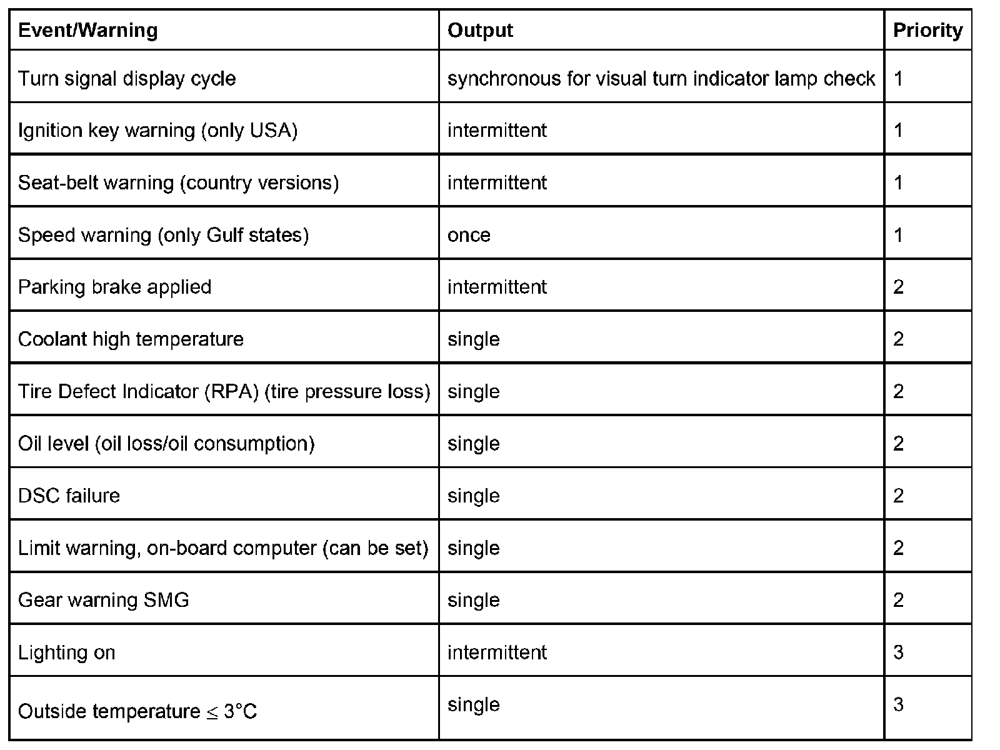

Instrument Cluster Displays and Functions, Part 1
Instrument Cluster: Displays And Functions
Various versions of the instrument cluster are fitted. The functions of the instrument cluster are shown in a number of display areas. In addition, acoustic warnings are issued in connection with several visual displays. The instrument cluster has diagnostic capability on diagnosis testers. Self-test functions are also integrated. On-board computer functions can be coded. The functions are displayed with:
Pointer instruments:
- Road speed
- Engine speed
- Coolant temperature
- Tank contents
LC display area 1:
- Total odometer reading
- Odometer (can be reset)
- Distance travelled in km or miles
- Manipulation point
- Time (with 12 hour or 24 hour display)
- Service intervals (SIA) with remaining distance (oil service and inspection) and service date
- Reset menu guidance for new start of service intervals
- Hour display with A (anti meridian: a.m. = before 12:00) and P (post meridian: p.m. = after 12:00)
- Average fuel consumption in MPG (miles per gallon) or in l/100 km or l/km
- Average speed in mph (miles per hour) or in km/h
- Prefix (+/-)
- Outside temperature in degree C or degree F
- On-board computer data (see On-board computer functions)
LC display area 2:
- Program and gear selection in the case of automatic transmission and sequential M-transmission (SMG) (can be coded, in the case of manual transmission, no display)
Indicator and warning lamps: The instrument cluster contains the following 24 indicator and warning lamps (as symbols or lettering):
- Turn signal indicators, left and right
- Battery charge indicator lamp
- High beam / headlight flasher
- Oil pressure / oil level low
- Anti-lock braking system (ABS) inactive
- General brake warning lamp
- Dynamic Braking Control (DBC) inactive
- Brake pad wear
- Fog lamps
- Rear fog light (country versions)
- Electromechanical power-assisted steering (EPS)
- Tire Defect Indicator (RPA) (tire pressure loss) / system failure or in the case of initialization (tire change, tire pressure change)
- Airbag
- Seat belt (country versions)
- Check Control (lamp faults)
- Transmission emergency program
- Electronic Throttle Control (EML)
- Engine electronics (also country version)
- Automatic Stability Control system (ASC) regulating or is inactive
- Dynamic Traction Control (DTC) regulating
- Coolant level insufficient
- Coolant high temperature
- Open fuel tank catch (country versions)
- Fuel reserve
Acoustic warnings/messages: Acoustic warnings/messages are issued to supplement some indicator and warning lamps (with the exception of turn indicators) via a loudspeaker as a single tone or as a continuous tone for:

Brief description of components
K-bus
The K bus (Body Electronics) is used for data exchange between the control modules of the body electronics and the instrument cluster. Data is exchanged by means of data telegrams.
PT CAN bus
The PT CAN bus (Powertrain CAN bus) is used for data exchange between the engine electronics, the Dynamic Stability Control (DSC) and the instrument cluster. Data is exchanged by means of data telegrams. In the case of automatic transmissions, the EGS control module is also connected.
D Bus
The D bus (diagnostic bus) is used for data exchange between the instrument cluster and a testing device. Data is exchanged by means of data telegrams.
For control modules that have no separate diagnosis lead but are attached to the K bus, the instrument cluster performs the gateway function for the telegram transport of the diagnosis.
BYTEFLIGHT
The byteflight is connected to the K bus via the Safety and Information Module (SIM), which acts as a gateway. Via this bus connection, the information from the satellites SBSL and SBSR is transferred to the instrument cluster.
Instrument cluster
The control module, circuits for signal processing, the power supply and operating and display elements are integrated in the instrument cluster.
The instrument cluster has the master function for other equipment attached to the bus and, as gateway module, connects the PT CAN bus (Powertrain bus), the K bus (Body Electronics bus), the D-bus (diagnostic bus) and the byteflight. Information is exchanged by means of data telegrams. The instrument cluster also receives signals directly from sensors.
Encoding data and nonvolatile counter levels are stored in the instrument cluster.
The two buttons S/R (Set/Reset) on the left and the clock symbol (right) can be used to make the following settings:
S/R button
- Resetting the trip-distance recorder
- Operating the SIA reset menu
- Setting the time
- Operating the test functions
Clock symbol button (right):
- Calling up setting time mode
- Calling up SIA service date during display of remaining distance
Steering-column lever (LSS)
The axial button in the steering-column lever (LSS) for the turn indicators can be used to trigger the evaluation of the on-board computer. It can also be used to select the digital clock or outside temperature display.
Lights switching center (LSZ)
The lights switching center (LSZ) activates the lighting for the instrument cluster. The lights switching center (LSZ) also controls the brightness of the dial face, pointer and display illumination. The information is transferred by means of data telegrams via the K bus to the instrument cluster.
Main functions
Standby
As of terminal 30 (terminal R and terminal 15 OFF), the instrument cluster is on standby. The circuit parts that are not required are disabled to reduce quiescent current (sleep mode). The clock module for real time, SIA time and periodical outside temperature measurement continues to run. Interrupts are performed by the K bus and S/R button. In the case of terminal 30 operation, the K bus and displays are inactive.
For display of travel distance and time, the instrument cluster can be wakened using the S/R button. Following a period of 25 seconds, the instrument cluster returns to the Sleep mode. During the display period, no buses are wakened.
The gear display, Check Control indicator lamp and the sensors for coolant level, brake pads, etc. become active as of terminal 15 On. Communication with engine, transmission and chassis control modules is handled via the PT CAN bus. All interfaces of the instrument cluster are active.
The status of terminal 30h (terminal 50 starting motor) is registered by a digital input and made available to the system. During the start operation, the evaluation of signal inputs is restricted. If terminal 30 is on, no A/D conversions are evaluated. Digital input information, e.g. from buttons, is not used either.
Overvoltage / undervoltage function
The power supply of the instrument cluster is by means of a switching controller. The switching controller compensates for voltage fluctuations of the vehicle electrical system in the range from 9 V to 16 V.
Undervoltage: the vehicle voltage is measured as of terminal 30 every 30 milliseconds. As of a voltage of approx. 7.5 V, undervoltage is detected. Then, no more read and write accesses are permitted to the EEPROM. Prior to a possible undervoltage reset, the instrument cluster initiates a data backup.
Overvoltage: overvoltage is detected in the case of a voltage > 16 V. The micro controller initiates measures to back up the hardware. Data (mileage, SIA data, time, date, etc.) or states are not lost because they are stored in good time. Indicator and warning lamps are switched off or dimmed for the duration of the overvoltage.
Redundant connection: control module DSC - control module instrument cluster
The control modules of the Dynamic Stability Control (DSC) and instrument cluster communicate across the PT CAN bus. In addition, the two control modules are also connected by cables to ensure redundant information transfer.
On one cable, the travelled distance signal processed by the DSC control module is transferred from the rear left ABS speed sensor. The signal is used to calculate the travelled distance and the travelling speed.
On another cable, the signal for activation of the ABS warning lamp is transferred. This signal is displayed in the event of malfunctions in the braking control system as well as PT CAN bus failure. If it is detected that the signal is missing on this cable, a break in the plug-in connection on the DSC control module is also detected (legal requirement).
Redundant data storage
The redundant data storage function is described in the functional description of the instrument cluster: internal test functions, service interval display (SIA), measures for replacing control modules
Service Interval Display (SIA)
The Service Interval Display (SIA) function is described in the functional description of the instrument cluster: internal test functions, service interval display (SIA), measures for replacing control modules
Key Reader and SAM 1
The Key reader and SAM 1 functions are described in the functional description of the instrument cluster: internal test functions, service interval display (SIA), measures for replacing control modules
Gateway function
The instrument cluster is the interface between the K bus, PT CAN bus and diagnostic bus. The instrument cluster communicates with other control modules in the vehicle across the (single-wire) K bus and the (double-wire) PT CAN bus. Here, the instrument cluster transmits/receives messages to/from equipment attached to the bus. The connection to the diagnosis tester is via the (single-wire) diagnostic bus.
The instrument cluster performs the following gateway functions in the bus interconnection:
- Telegram composition diagnosis (DS2) <=> K bus
- Telegram composition diagnosis (KWP2000*) <=> K bus
- Telegram composition PT CAN bus <=> K bus
For control modules without diagnosis interface, the instrument cluster maintains the dialogue with the diagnosis tester. For this purpose, the instrument cluster implements the K bus telegrams of these control modules on the diagnostic bus.
Example (only for USA): In the case of the function of the two-stage Brake Force Display, the DSC control module (PT CAN bus) transmits the information 'longitudinal deceleration' (braking) to the instrument cluster. If a threshold value coded in the instrument cluster is exceeded, the lights switching center (LSZ) receives the instruction across the K bus to activate the brake lights with stage 1 or stage 2.
The information flow across the bus interconnection is as follows:
---> DSC === PT CAN === instrument cluster ---- K bus ---- LSZ --->
NOTE: The diagnosis is described in the functional description of the instrument cluster: internal test functions, service interval display (SIA), measures for replacing control modules
Lighting and dimming
Lighting: the instrument cluster is illuminated as of terminal R On. For switching on, the signal 'Light ON' is sent across the K bus by the lights switching center (LSZ) to the instrument cluster. The voltage is supplied by a switching controller in the instrument cluster.
The road speed and engine speed displays are lit by split-light illumination (emitted light between dial and dial face). The LC display areas 1 (in the speedometer) and 2 (program and gear display) are composed of orange-colored segments.
The lights switching center (LSZ) controls the brightness of the dial face, pointer and display illumination (instrument dimmer). To control the instrument dimmer, the lights switching center (LSZ) evaluates the signals from the dimmer (dimmer wheel) and the photocell on the lights switching center (LSZ) to determine the surrounding brightness. The dimmer signal is transmitted across the K bus.
Speedometer
The travelling speed is derived from the current number of travel impulses from the ABS control module as of terminal 15 ON. The travelling speed is displayed in analog form in the left-hand instrument dial. The needle is driven by a step motor. The scale is country-specific (country variant).
Revolution counter
The information regarding the current engine speed is supplied to the instrument cluster as of terminal 15 ON by the engine electronics across the PT CAN bus.
The engine speed is displayed in analog form in the right-hand instrument dial. The engine speed is scaled in revolutions per minute (rpm). A red warning field signals the overspeed range. The needle is driven by a step motor.
Coolant temperature gauge
Information corresponding to the coolant temperature is supplied to the instrument cluster as of terminal 15 ON by the engine electronics across the PT CAN bus. This information is displayed in analog form in the small, right-hand instrument dial in the revolution counter. The needle is driven by a step motor. In the case of high temperature, the maximum movement of the pointer is to the middle of the red warning zone. The warning field is simultaneously an indicator lamp. Circuitry measures prevent that the display is moved into the red warning zone following a hot start.
Independent of the dial position, an overtemperature display can be activated by the engine electronics across the PT CAN bus.
Fuel gauge
Fuel-tank sensors L and R receive their 5 V of power from the switching controller in the instrument cluster. The signals from the two fuel-tank sensors are read in separately. The tank content is calculated in the instrument cluster from the signals from the fuel-tank sensor and other set quantities. The calculated fuel rate is displayed in analog form with the small left-hand instrument dial in the revolution counter. The needle is driven by a step motor.
When a factory-coded reserve threshold (standard = 8 liters) is reached, an additional tank-reserve lamp is switched on. The lamp is prevented from flickering by software hysteresis.
The data corresponding to the available fuel is provided as telegrams on the PT CAN bus, the K bus and the diagnostic bus for control modules and service.
Distance display
As of terminal 15 On, the ABS control module sends the distance signal to the control module of the instrument cluster. The distance is derived in 10 m increments from the distance signal. The values are totalled in the memory for the total distance travelled and trip distance recorder (GWSZ and TWSZ). Each kilometer is saved by the distance recorder (GWSZ).
For cases involving replacement, there is an additional redundant backup every 100 km of the mileage in km and the SIA data in the lights switching center (LSZ). At the same time, the kilometer reading and the SIA data are transferred via K bus to the electronic vehicle immobilization unit (EWS). (The customer authorization key is provided with data from the EWS (vehicle immobilization unit).
The total mileage is converted into km or miles on a country-specific basis. The value is displayed as a six-digit number. Display in the LC display is as of terminal R On or with terminal 30 for 25 seconds after actuating the S/R button.
The trip odometer is also converted into km or miles on a country-specific basis. The value is displayed as a four-digit number. Display in the LC display is as of terminal R On to the exact tenth of a kilometer or tenth of a mile.
The odometer and trip distance recorder can be switched on independently of terminal R On. Both travel distances are always displayed simultaneously. The trip-distance counter can be reset to zero any number of times using the S/R button as of terminal R ON.